|
David Freire-Obregón I am an associate professor at ULPGC. I received my PhD from ULPGC, where I was advised by Modesto-Castrillón-Santana. |
|
David Freire-Obregón I am an associate professor at ULPGC. I received my PhD from ULPGC, where I was advised by Modesto-Castrillón-Santana. |
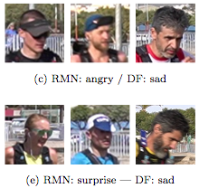 |
Facial expression analysis in a wild sporting environment
[doi] /
[bibtex]
@inproceedings{ojsantana22mtool,
title={Facial expression analysis in a wild sporting environment},
author={Oliverio J. Santana and David Freire-Obregón and Daniel Hernández-Sosa and Javier Lorenzo-Navarro and Elena Sánchez-Nielsen and Modesto Castrillón-Santana},
booktitle={Multimedia Tools and Applications},
year={2022},
doi = {10.1007/s11042-022-13654-w}
}
|
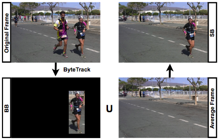 |
Towards cumulative race time regression in sports: I3D ConvNet transfer learning in ultra-distance running events
[Arxiv] /
[doi] /
[video] /
[bibtex]
@inproceedings{freire22icpr,
title={Towards cumulative race time regression in sports: I3D ConvNet transfer learning in ultra-distance running events},
author={David Freire-Obregón and Javier Lorenzo-Navarro and Oliverio J. Santana and Daniel Hernández-Sosa and Modesto Castrillón-Santana},
booktitle={International Conference on Pattern Recognition (ICPR)},
pages = {805-811},
year={2022},
doi = {10.1109/ICPR56361.2022.9956174}
}
|
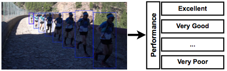 |
Decontextualized I3D ConvNet for ultra-distance runners performance analysis at a glance
[Arxiv] /
[bibtex]
@inproceedings{freire22iciap,
title={Decontextualized I3D ConvNet for ultra-distance runners performance analysis at a glance},
author={David Freire-Obregón and Javier Lorenzo-Navarro and Modesto Castrillón-Santana},
booktitle={International Conference on Image Analysis and Processing (ICIAP)},
pages = {242-253},
year={2022},
doi = {10.1007/978-3-031-06433-3_21}
}
|
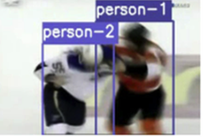 |
Inflated 3D ConvNet context analysis for violence detection
[doi] /
[bibtex]
@article{freire22mvap,
title={Inflated 3D ConvNet context analysis for violence detection},
author={David Freire-Obregón and Paola Barra and Modesto Castrillón-Santana and Maria de Marsico},
journal={Machine Vision and Applications},
volume={33},
number={15},
year={2022},
doi={10.1007/s00138-021-01264-9}
}
|
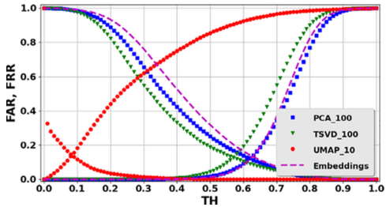 |
Improving user verification in human-robot interaction from audio or image inputs through sample quality assessment
[doi] /
[bibtex]
@article{freire21prl,
title = {Improving user verification in human-robot interaction from audio or image inputs through sample quality assessment},
author = {David Freire-Obregón and Kevin Rosales-Santana and Pedro A. Marín-Reyes and Adrian Penate-Sanchez and Javier Lorenzo-Navarro and Modesto Castrillón-Santana},
journal = {Pattern Recognition Letters},
volume = {149},
pages = {179-184},
year = {2021},
doi = {10.1016/j.patrec.2021.06.014}
}
|
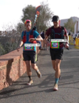 |
TGCRbNW: A dataset for runner bib number detection (and recognition) in the wild
[doi] /
[bibtex]
@inproceedings{hercas21icpr,
author={Hernández-Carrascosa, Pablo and Penate-Sanchez, Adrian and Lorenzo-Navarro, Javier and Freire-Obregón, David and Castrillón-Santana, Modesto},
booktitle={2020 25th International Conference on Pattern Recognition (ICPR)},
title={TGCRBNW: A Dataset for Runner Bib Number Detection (and Recognition) in the Wild},
year={2021},
pages={9445-9451},
doi={10.1109/ICPR48806.2021.9412220}}
|
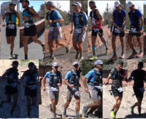 |
TGC20ReId: A dataset for sport event re-identification in the wild
[doi] /
[bibtex]
@article{penate20prl,
title = {TGC20ReId: A dataset for sport event re-identification in the wild},
author = {Adrian Penate-Sanchez and David Freire-Obregón and Adrián Lorenzo-Melián and Javier Lorenzo-Navarro and Modesto Castrillón-Santana},
journal = {Pattern Recognition Letters},
volume = {138},
pages = {355-361}
year = {2020},
doi = {10.1016/j.patrec.2020.08.003}
}
|
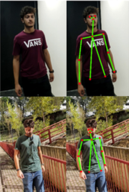 |
An attention recurrent model for human cooperation detection
[doi] /
[bibtex]
@article{freire20cviu,
title = {An attention recurrent model for human cooperation detection},
author = {David Freire-Obregón and Modesto Castrillón-Santana and Paola Barra and Carmen Bisogni and Michele Nappi},
journal = {Computer Vision and Image Understanding},
volume = {197-198},
pages = {102991},
year = {2020},
issn = {1077-3142},
doi = {10.1016/j.cviu.2020.102991}
}
|
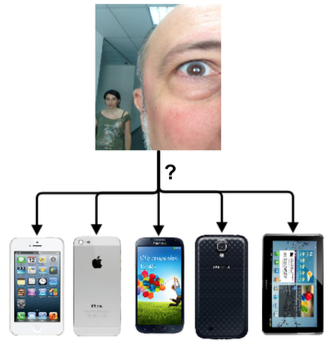 |
Deep learning for source camera identification on mobile devices
[Arxiv] /
[doi] /
[bibtex]
@article{freire19prl,
title = {Deep learning for source camera identification on mobile devices},
author = {David Freire-Obregón and Fabio Narducci and Silvio Barra and Modesto Castrillón-Santana},
journal = {Pattern Recognition Letters},
volume = {126},
pages = {86-91},
year = {2019},
issn = {0167-8655},
doi = {10.1016/j.patrec.2018.01.005}
}
|
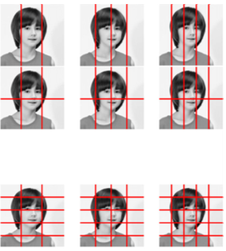 |
Evaluation of local descriptors and CNNs for non-adult detection in visual content
[doi] /
[bibtex]
@article{castrillon18prl,
title = {Evaluation of local descriptors and CNNs for non-adult detection in visual content},
author = {Modesto Castrillón-Santana and Javier Lorenzo-Navarro and Carlos M. Travieso-González and David Freire-Obregón and Jesús B. Alonso-Hernández},
journal = {Pattern Recognition Letters},
volume = {113},
pages = {10-18},
year = {2018},
issn = {0167-8655},
doi = {10.1016/j.patrec.2017.03.016}
}
|
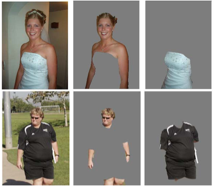 |
Automatic clothes segmentation for soft biometrics
[doi] /
[bibtex]
@inproceedings{freire14icip,
title={Automatic clothes segmentation for soft biometrics},
author={Freire-Obregón, D. and Castrillón-Santana, M. and Ramón-Balmaseda, E. and Lorenzo-Navarro, J.},
booktitle={2014 IEEE International Conference on Image Processing (ICIP)},
year={2014},
pages={4972-4976},
doi={10.1109/ICIP.2014.7026007}}
|
{kind=link}